Universidad Nacional de San Antonio Abad del Cusco
Escuela Profesional de Ingeniería Informática y de Sistemas
Implementación de un Modelo de Aprendizaje Automático Cuántico
Utilizando Qiskit Machine Learning sobre hardware cuántico real IBM Quantum
GRUPO 1
Saire Bustamante
Lozano Llactahuaman
Puma Potosino
Junio 2026
Estructura de la Presentación
Fundamentos Teóricos
Qubits, puertas, QML, NISQ
Entorno y Datos
Hardware, software, datasets
Diseño Experimental
3 escenarios progresivos
Exp. 1: Baseline vs. VQC
Clásico vs. variacional
Exp. 2: Estado de Bell
Verificación de fidelidad HW
Exp. 3: QSVC Sim. vs. HW
Degradación del kernel
Exp. 4: Mitigación TREX
Corrección de errores SPAM
Exp. 5: MNIST Hardware
Resultado atípico
Resumen Comparativo
11 modelos, tabla + radar
Conclusiones y Futuro
Hallazgos y líneas de trabajo
Computación Cuántica: Conceptos Clave
Qubits y Superposición
El qubit existe en superposición de |0⟩ y |1⟩:
Un sistema de n qubits vive en un espacio de Hilbert de dimensión 2ⁿ.
Puertas Cuánticas
Operaciones unitarias. Las rotaciones RY(θ) y RZ(θ) codifican datos angularmente.
Las puertas CNOT generan entrelazamiento, recurso esencial para correlaciones no triviales.
Circuitos Parametrizados
- Feature Map Uφ(x) — codifica datos
- Ansatz UW(θ) — parámetros entrenables
- Medición — proyecta sobre base Z
Feature Maps usados: ZZFeatureMap (interacciones RZZ de segundo orden) + Ansatz RealAmplitudes (RY + CNOT). Optimizador COBYLA (libre de gradiente, 300 iter). Shots: 2048 por circuito.
Circuitos Cuánticos del VQC
ZZFeatureMap (Codificación)
Mapea características clásicas x a ángulos de rotación.
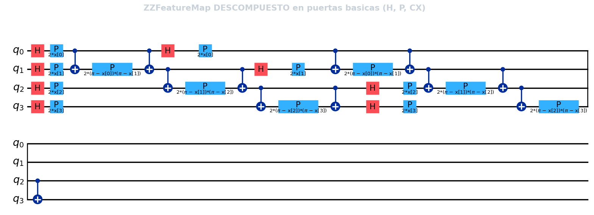
RealAmplitudes Ansatz (Entrenamiento)
Parámetros θ optimizables y entrelazamiento lineal.
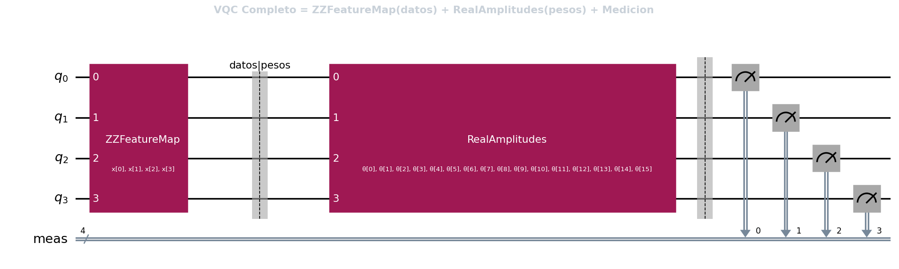
Modelos de Quantum Machine Learning
VQC — Variational Quantum Classifier
Circuito parametrizado entrenado de forma híbrida. La entropía cruzada se minimiza con un optimizador clásico; el circuito se evalúa en el QPU.
Problema: circuitos profundos sufren barren plateaus — gradientes que se desvanecen exponencialmente.
QSVC — Quantum SVM Classifier
Kernel cuántico de fidelidad:
Feature map mapea datos a espacio de Hilbert de dimensión 2⁴ = 16, potencialmente difícil de simular clásicamente.
Estado del Arte (2024–2026)
Bowles et al. (2024): benchmark de 12 modelos cuánticos en 160 datasets concluye que los clásicos out-of-the-box aún superan a los cuánticos.
Mitigación TREX
Twirled Readout Error Extinction: puertas Pauli-X aleatorias antes de medir, trasladando el ruido asimétrico a un canal de depolarización local invertible.
Infraestructura Híbrida: Clásica + Cuántica
Cómputo Clásico
| CPU | AMD Ryzen 7 9700X (8 cores) |
| RAM | 32 GB DDR5 |
| SSD | 1 TB NVMe Kingston |
| GPU | NVIDIA GTX 1050 Ti (4 GB) |
| Entorno | Jupyter / Google Colab |
Hardware Cuántico Real
| Sistema | ibm_fez |
| Chip | IBM Heron r2 |
| Qubits | 156 qubits físicos |
| Topología | Hexagonal pesado (anti-crosstalk) |
| Acceso | IBM Quantum Cloud (gratuito) |
Restricción: Cuota gratuita ~10 min/mes de QPU. Consumo total: ~594s (~9.9 min). Subset forzado: 13 train + 9 test. Stack: Python 3.10+, Qiskit, Qiskit ML, Qiskit Runtime, Scikit-learn.
Conjuntos de Datos y Preprocesamiento
Iris Dataset (3 clases)
| Registros | 150 muestras, 4 variables |
| Clases | Setosa, Versicolor, Virginica |
| Split normal | 105 train / 45 test |
| Split HW | 13 train / 9 test |
| Normalización | Min-Max → [0, π] |
MNIST Reducido (binario: 0 vs. 1)
| Original | 64 atributos (8×8 px) |
| PCA | Compresión a 4D (73.4% var.) |
| Clases | 2 (dígitos "0" y "1") |
| Split HW | 13 train / 9 test |
| Codificación | Angle Embedding |
Restricción crítica: Con 9 muestras de test, cada muestra = ±11.1% del accuracy.
Codificación Angular de Características Clásicas
Pipeline de Mapeo a Qubits
El dataset Iris (4D) se normaliza en el rango [0, π] para representar rotaciones sobre la esfera de Bloch.
Cada característica xi se asocia con un qubit, aplicando compuertas de rotación parametrizadas por el feature map.
Esto explota el espacio de estados de Hilbert para buscar fronteras de decisión no lineales en el espacio clásico.
Circuito de Codificación (Detallado)
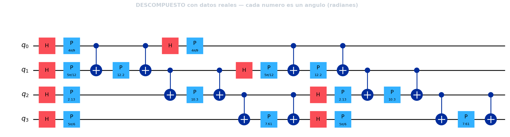
Escenarios de Prueba Progresivos
Simulación Ideal
Statevector Simulator (Sin Ruido)
- Modelos: SVM, MLP, KNN clásicos + VQC y QSVC cuánticos.
- Muestras: Dataset completo (105 de entrenamiento / 45 de prueba).
- Objetivo: Establecer la precisión teórica óptima libre de perturbaciones físicas.
HW sin Mitigación
QPU Física Real (ibm_fez)
- Procesador: IBM Heron r2 (156 qubits físicos con topología hexagonal pesada).
- Restricción: Muestra reducida (13 entrenamiento / 9 prueba) por límite de cuota.
- Efectos: Exposición a ruido de fase, decoherencia T1/T2 y errores de compuertas.
HW + TREX
QPU Real con Mitigación SPAM
- Técnica: Twirled Readout Error Extinction mediante promediado de Pauli.
- Enfoque: Corrección de errores de lectura al final de la medición.
- Evaluación: Analizar si la corrección SPAM rescata un kernel geométricamente colapsado.
Línea Base Clásica vs. VQC Simulado
Modelos Clásicos (Iris completo)
| Modelo | Accuracy | F1 |
|---|---|---|
| SVM-RBF | 93.33% | 0.933 |
| MLP | 93.33% | 0.933 |
| KNN | 93.33% | 0.933 |
VQC (3 semillas, COBYLA 300 iter.)
| Semilla | Accuracy | Iter. | Tiempo |
|---|---|---|---|
| 42 | 55.56% | 152 | 36.1s |
| 123 | 60.00% | 164 | 41.1s |
| 789 | 46.67% | 130 | 32.5s |
Brecha Cuántico-Clásica
VQC (60%) vs. SVM (93.3%)
El loss landscape variacional presenta mínimos locales difíciles de superar. Consistente con Bowles et al. (2024).
Accuracy, Convergencia VQC y F1-Score por Modelo
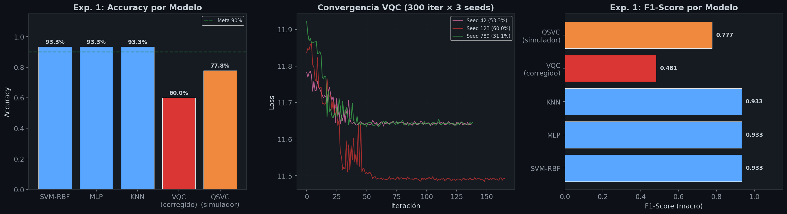
Circuito y Distribución de Probabilidad: Simulador vs. ibm_fez
Circuito de Bell (H + CNOT)
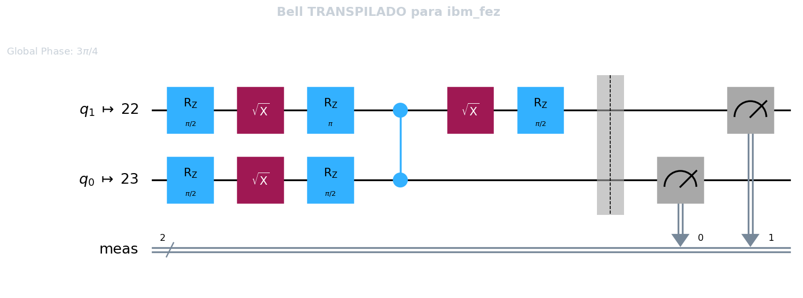
Generación del estado entrelazado |\Phi+⟩ = 1/√2 (|00⟩ + |11⟩). Las pequeñas fugas hacia |01⟩ y |10⟩ en hardware real se deben a errores de lectura (SPAM) y relajación térmica T1.
Histograma de Probabilidad
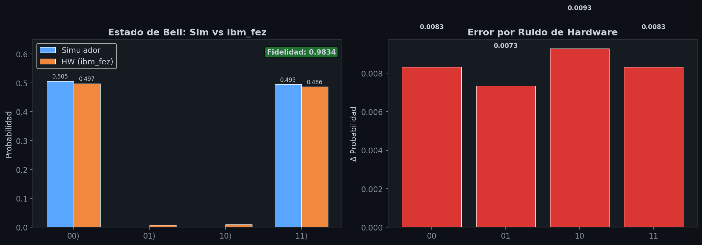
QSVC: Simulador vs. Hardware Real
Resultados del Kernel QSVC
| Entorno | Accuracy | F1 | Tiempo |
|---|---|---|---|
| Simulador (full) | 77.78% | 0.777 | 19.7s |
| Simulador (subset) | 33.33% | 0.324 | 0.46s |
| HW ibm_fez | 11.11% | 0.111 | 182s |
Degradación dual:
1. Escasez muestral: 77.8% → 33.3% (−44 pp)
2. Ruido NISQ: 33.3% → 11.1% (−22 pp)
Degradación total
77.8% (sim. full) → 11.1% (hw)
= 1 de 9 muestras correctas
Circuito Compute-Uncompute y Matrices de Kernel Cuántico
Esquema Compute-Uncompute
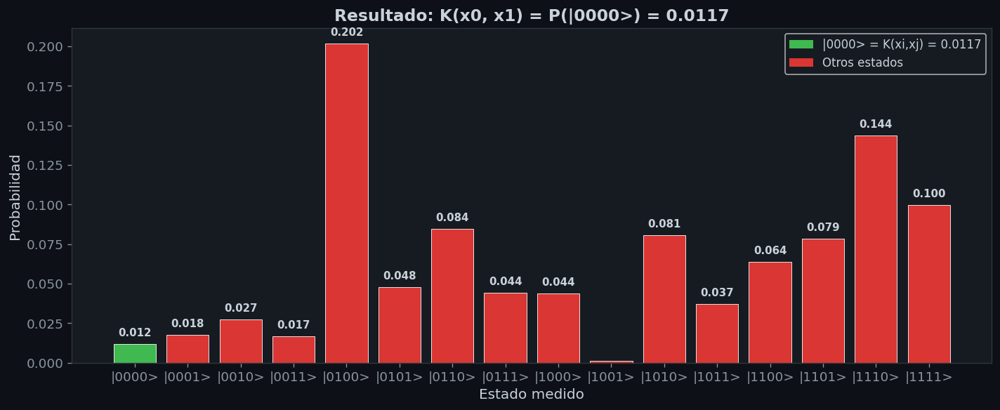
El kernel cuántico calcula K(xi, xj) = |⟨0n| Uϕ†(xj) Uϕ(xi) |0n⟩|2. En hardware real, la decoherencia destruye la estructura diagonal del kernel de entrenamiento.
Matrices de Similitud
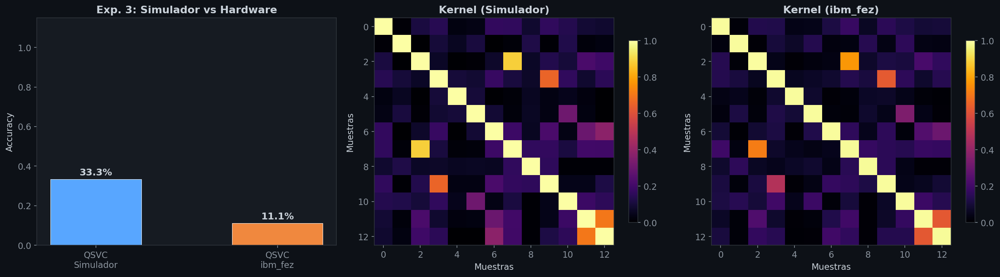
Mitigación de Errores: TREX
Accuracy post-TREX
Sin cambio respecto a sin mitigación
Se requieren técnicas más agresivas: ZNE (Zero Noise Extrapolation) o PEC (Probabilistic Error Cancellation) que operen sobre el ruido de compuerta.
¿Por qué TREX no funcionó?
- TREX corrige errores de lectura (SPAM), no ruido de compuerta
- El kernel está geométricamente colapsado por ruido coherente + escasez muestral
- La corrección de lectura no recupera información perdida en compuertas intermedias
- El circuito compute-uncompute acumula errores en toda su profundidad antes de la medición
Estabilidad de Predicción Post-TREX
Accuracy invariable (11.11%) respecto al escenario sin mitigación. La corrección SPAM no recupera un kernel colapsado.
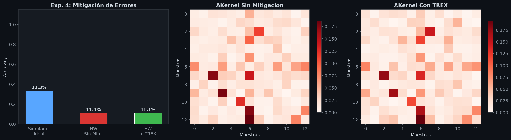
MNIST en Hardware: Resultado Atípico
MNIST Binario (0 vs. 1), PCA → 4D
| Modelo | Accuracy | F1 | Tiempo |
|---|---|---|---|
| SVM-RBF (clásico) | 100.0% | 1.000 | 0.01s |
| QSVC (simulador) | 77.78% | 0.775 | 0.43s |
| QSVC (ibm_fez) | 88.89% | 0.889 | 205s |
HW superó al Simulador
Simulador
ibm_fez
No es ventaja cuántica. Con 9 muestras test (±11.1% cada una), el ruido estocástico actuó como regularización implícita. Artefacto estadístico por baja resolución muestral. Con datasets más grandes, el simulador superaría al hardware.
Clasificación MNIST (0 vs. 1): Clásico, Simulador y Hardware
Dataset binario comprimido con PCA a 4D (73.44% varianza). Resultado atípico: HW (88.9%) supera al simulador (77.8%).
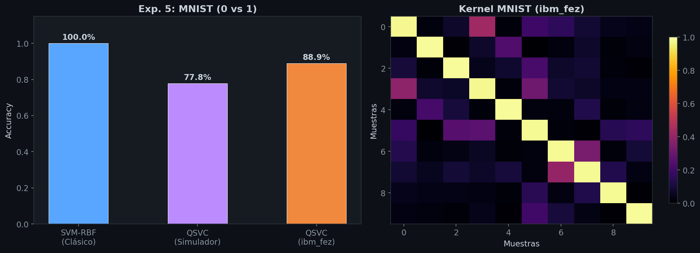
Comparación Global de Todos los Modelos
| Tipo | Modelo | Accuracy | F1 (macro) | Entorno |
|---|---|---|---|---|
| Clásico | SVM-RBF (Iris) | 93.33% | 0.933 | Local |
| Clásico | MLP (Iris) | 93.33% | 0.933 | Local |
| Clásico | KNN (Iris) | 93.33% | 0.933 | Local |
| Simulador | VQC (Iris) | 60.00% | 0.481 | Statevector |
| Simulador | QSVC (Iris full) | 77.78% | 0.777 | Statevector |
| Simulador | QSVC (Iris subset) | 33.33% | 0.324 | Statevector |
| Hardware | QSVC sin mitigación | 11.11% | 0.111 | ibm_fez |
| Hardware | QSVC + TREX | 11.11% | 0.111 | ibm_fez |
| Clásico | SVM-RBF (MNIST) | 100.00% | 1.000 | Local |
| Simulador | QSVC (MNIST) | 77.78% | 0.775 | Statevector |
| Hardware | QSVC (MNIST) | 88.89% | 0.889 | ibm_fez |
Comparación Global: Clásico vs. Simulador vs. Hardware
Barras de accuracy por modelo y gráfico radar de rendimiento multidimensional (Accuracy Iris, Accuracy MNIST, Fidelidad Kernel).
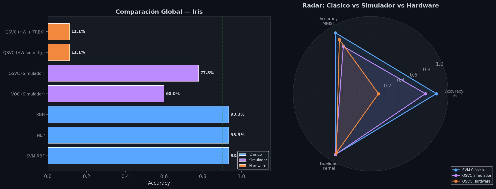
Conclusiones de la Experimentación
Viabilidad demostrada: Se validó la integración completa entre Qiskit y el procesador IBM Heron r2 (ibm_fez, 156 qubits). La fidelidad de Bell de 0.9834 confirma la calidad del hardware.
Impacto dual cuantificado: La escasez muestral causa −44 pp y el ruido NISQ causa −22 pp adicionales. Sin mitigación avanzada (ZNE/PEC), los kernels cuánticos son inviables en hardware real.
Brecha cuántico-clásica: Los modelos clásicos (SVM-RBF, MLP, KNN = 93.3%) superan al mejor QML (VQC = 60%). Consistente con Bowles et al. (2024): NISQ no ofrece ventaja competitiva actual.
Reproducibilidad: Código completo, datasets, matrices de kernel y resultados disponibles en el repositorio público de GitHub.
Universidad Nacional de San Antonio Abad del Cusco
Líneas de Trabajo Futuro
Escala Muestral
Migrar a IBM Premium Access para eliminar la restricción de cuota e inyectar datasets completos.
Mitigación Avanzada
Implementar ZNE y PEC con la primitiva EstimatorV2 para operar sobre ruido de compuerta.
Benchmark Justo
Replicar Bowles et al. (2024) con 160 datasets en hardware real para detectar nichos de ventaja.
github.com/milith0kun/Computacion_Cuantica
Grupo 1
Saire Bustamante
Lozano Llactahuaman
Puma Potosino
Junio 2026